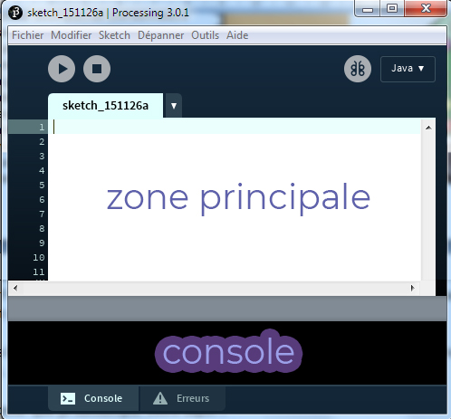
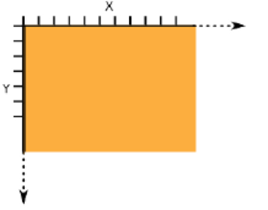
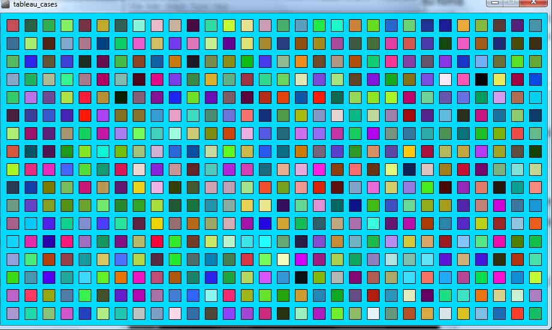

Python - Initiation à la
programmation via Processing
Programmation via processing
1 ○ Notre outil, le logiciel Processing…
Processing est un compilateur java permettant de réaliser des programmes en java plutôt orienté pour le graphisme, c’est-à-dire que l’on arrive très rapidement à réaliser des programmes « jolis » visuellement. Mais qui peut le plus peut le moins et toutes les fonctionnalités java restent opérationnelles. De nombreuses bibliothèques permettent également de réaliser certaines fonctions de manière plus commode. Par ailleurs, il existe un mode python (en haut à droite, cliquer sur java et ajouter mode) qui permet de programmer dans ce langage après avoir été installé, c’est ce mode que nous utiliserons au moins dans un premier temps.
Télécharger l'exécutable processing Notice (java) Commandes java Commandes python Ouvrir Processing
La zone principale est celle où vous taperez votre programme. La console permet au programmeur d’afficher du texte et au programme d’indiquer les erreurs détectées. Dans l'environnement Processing un programme est nommé « sketch » (Croquis) et correspond à un onglet. Dans le cas de programme de grande taille, les onglets permettent de découper le code par thème. Chaque onglet sera sauvé dans un fichier différent, mais tous les fichiers/onglets seront chargés en même temps, Attention, les onglets seront donc considérés comme un seul programme.
2 ○ Dessiner avec Processing
Coordonnées dans l'espace : Quand on travaille en 2 dimensions (2D) dans Processing, on utilise deux axes de coordonnées x et y correspondant respectivement à la largeur (axe horizontal) et à la hauteur (axe vertical) d'une situation. Par convention de la mesure de l'espace, le coin en haut à gauche correspond aux valeurs x = 0 et y = 0. Les valeurs x sont croissantes vers la droite et les valeurs y sont croissantes vers le bas, contrairement à notre habitude du plan cartésien. Ces valeurs x et y peuvent s'étendre théoriquement à l'infini, même si en réalité, les contraintes de la taille de votre fenêtre vont délimiter la taille maximale d'une surface de création visible.C'est donc dans cet espace que nous allons dessiner.En observant n’importe quelle image, on s’apreçoit qu’on peut la décomposer en une suite d’instructions : point, ligne, cercle, ellipse, triangle, quadrilatère, courbe,... Par ailleurs, il y a un fond, un remplissage, des contours. Tout ceci est expliqué ci-dessous et plus en détail dans la notice (page 27 et suivantes).
Actions classiques
1 ○ Commentaires
Un commentaire est uniquement visible lors de la conception du programme, il n’apparaît pas lors de son exécution et permet donc de se souvenir plus rapidement de l’utilité d’une ligne particulière. Syntaxe : # texte de commentaire. Exercice 1 : placer 5 commentaires sur votre programme de maison.
2 ○ Lecture d’une entrée
Processing n’intègre pas la fonction input présente de manière native dans Python. Il faut donc trouver d’autres solutions pour récupérer des informations fournies par l’utilisateur du programme.L’une d’elles consiste à importer une bibliothèque présente dans Java et qui permet de créer des boîtes de dialogue. Le programme boite_dialogue_simple.pyde vous donne un exemple que vous avez à disposition devrait vous donner une idée de ce que l’on peut faire avec.
Exercice 2 : Créez un programme qui affiche la distance à laquelle on se trouve d’un orage si l’utilisateur donne le temps qu’il a mesuré entre la vision de l’éclair et celle du tonnerre. La vitesse du son vaut 330 m/s. Affichez également le résultat dans la console. Ecrire les commentaires associés. Utilisez la commande text (message , x, y) pour afficher le résultat ans la fenêtre graphique au lieu de la console (x et y sont les coordonnées de départ du texte, possibilité de changer taille et police du texte).
Le programme boite_dialogue.pyde devrait vous donner une idée de ce que l’on peut faire avec. Pour aller plus loin : Openclassrooms - Débutez la programmation avec java. Il faudra adapter certains aspects à Python.
3 ○ Boucles…
 Vous pouvez tester le programme boucle_simple disponible. Exercice n°3 : Réaliser un compteur de 0 à 100 s’affichant dans la console Exercice n°4 : Réaliser un compte à rebours Exercice n°5 : Adaptez le programme boucle_simple afin d’obtenir un dégradé vertical de couleur jaune. Exercice n°6 : En combinant deux boucles imbriquées, réaliser un tableau de cases colorées aléatoirement comme sur le modèle ci-contre. Commencer par faire un algorithme sur papier ainsi qu’un tracé de grille avec les coordonnées…
4 ○ Réaliser une animation
Nous avons jusqu’à présent utilisé le mode statique de Processing qui correspond à ce que nous avions vu en Python avec spyder. Il existe nénamoins un autre mode dit « dynamqiue ». Pour l’utiliser on exécute deux fonctions particulières.
- La fonction setup() s’exécute une fois et une seule, au lancement du programme. - La fonction draw () s’exécute en boucle, à une fréquence donnée (modifiable dans frameRate, par défaut 60 fois par seconde).
Exécuter le programmme animation_fréquence. Exercice 7 : analyser le et modifier le en augmentant la valeur du frameRate() puis en diminuant la valeur du random(). Modifier l'animation en ajoutant une couleur de fond aléatoire
5 ○ Les actions conditionnelles
Rien de bien spécial ici, les commandes if, elif… sont fonctionnelles. Exercice n°8 : Vous devez réaliser un programme permettant d’afficher la mention obtenue au bac en fonction de la moyenne obtenue. Exercice n°9 : On améliore le programme précédent : vous devez utiliser un booléen au démarrage du programme pour savoir si l’utilisateur désire connaître sa mention éventuelle. Sinon, le programme s’arrête après un message informatif.
6 ○ Evènements souris et clavier
La position de la souris : A tout moment, on peut obtenir les coordonnées de la position de la souris suivant X et Y à l'aide de la fonction mouseX et mouseYExercice n°10 : réaliser une programme qui affiche un rectangle rouge sur la partie gauche de la fenêtre si la souris est à gauche et un rectangle vert à droite si on est à droite. Le fond est blanc.
Exercice n°11 : Créer un programme qui ouvre une fenêtre blanche de 200*200, qui affiche un cercle de diamètre 10 pixels qui se déplace avec la souris (Cercle jaune au contour noir).
Exercice n°12 : à chaque fois que l’on clique sur la souris, le fond change de couleur aléatoirement.
Exercice n°13 : Tester le programme balle puis modifiez-le afin que la balle démarre quand on appuie sur une touche et s’arrête quand on clique sur la souris.
Exercice n°14 : la balle peut-elle rebondir indéfiniment ?.
7 ○ Gestion du temps
Exercice 15 : exploiter la fonction « millis » pour placer un compteur de temps en secondes écoulé es depuis le début du lancement d'un programme au choix.
Les fonctions (dessin)
La fonction size: Lorsque vous écrivez une ligne de code et que vous appuyez sur Run, une fenêtre s'ouvre, mais elle est toute petite. Pour régler ce problème, vous pouvez régler la taille de la fenêtre avec la fonction Size().La fonction background: Cette fonction va nous permettre de donner une couleur à notre fenêtre, à l'arrière-plan. Syntaxe : background(R,G,B) (R est la quantité de rouge, G de vert et B de bleu : valeur comprise entre 0 et 255). On peut aussi coder en hexadecimal : par exemple #FFFFFF correspond à blanc. En utilisant ce lien, colorer une fenêtre de 300 par 200 en jaune puis en rose.
La fonction line: La fonction line() permet de tracer un trait entre deux points, donc tout simplement un trait. Syntaxe : line(X1,Y1,X2,Y2) ex : line(1,1,150,150) X1 étant l'abscisse du premier point (l'extrémité de la ligne) Y1 étant l'ordonnée du premier point X2 étant l'abscisse du second point Y2 étant l'ordonnée du second point
La fonction stroke: La fonction Stoke() permet de donner une couleur à un trait, ou de donner une couleur autour d'une forme.
La fonction rect: La fonction Rect() permet de dessiner un rectangle. Syntaxe : rect(X,Y,largeur,hauteur); ex : rect(50,50,100,100); X étant l'abcisse du coin supérieur gauche du rectangle Y étant l'ordonnée du coin supérieur gauche du rectangle
La fonction fill: La fonction Fill() permet de remplir une forme avec une couleur.
La fonction ellipse: La fonction Ellipse() permet de dessiner une ellipse, et un cercle. Syntaxe : ellipse(X,Y,largeur,hauteur); ex : ellipse(50,50,100,100); X étant l'abscisse du centre de l'ellipse Y étant l'ordonnée du centre de l'ellipse
La fonction point: La fonction point() permet de faire un point. Syntaxe : point(x,y); ex : point(100,100);
La fonction rectMode: La fonction rectMode() permet de régler rect(). X et Y sont respectivement l'abscisse et l'ordonnée du coin gauche. Lorsque vous faites un rectangle, vous déclarez en premier x et y, puis la largeur et la hauteur. Par défaut, x et y sont le coin supérieur gauche du rectangle. Si vous utilisez CORNER, x et y seront le centre du rectangle. Syntaxe : rectMode(CENTER); (CORNER par défaut) rectMode(CENTER); rect(50,50,100,100);
La fonction ellipseMode: La fonction ellipseMode() fonctionne sur le même principe que rectMode(). Cependant, c'en est l'inverse. Par défaut, x et y sont le centre de l'ellipse. En utilisant CORNER, x et y sont définis comme le coin supérieur gauche. Syntaxe : ellipseMode(CORNER); (CENTER par défaut) ellipseMode(CENTER); ellipse(50,50,100,100);
La fonction smooth: Lorsque vous faites un cercle, le trait n'est pas net, c'est dû à la pixélisation. Pour y remédier on utilise la fonction smooth(). Syntaxe : smooth(); attention il faut que la fonction background soit dans la fonction où se trouve le smooth. background (255) ; smooth(); ellipse(50,50,100,100);